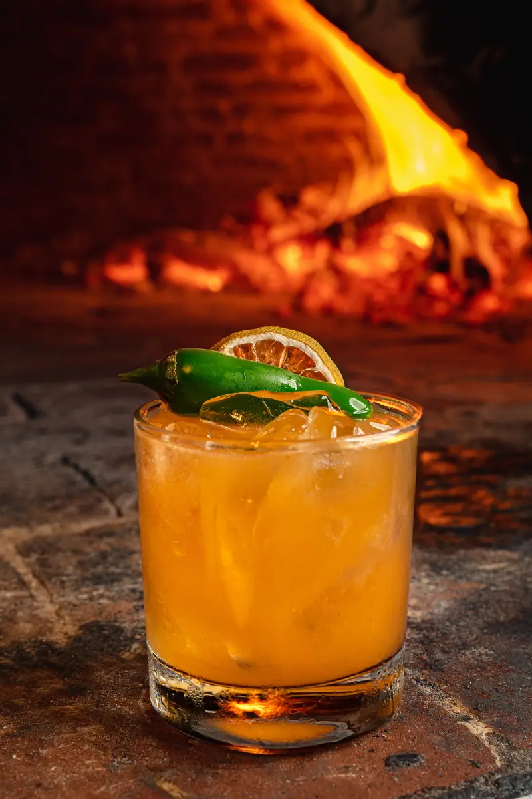
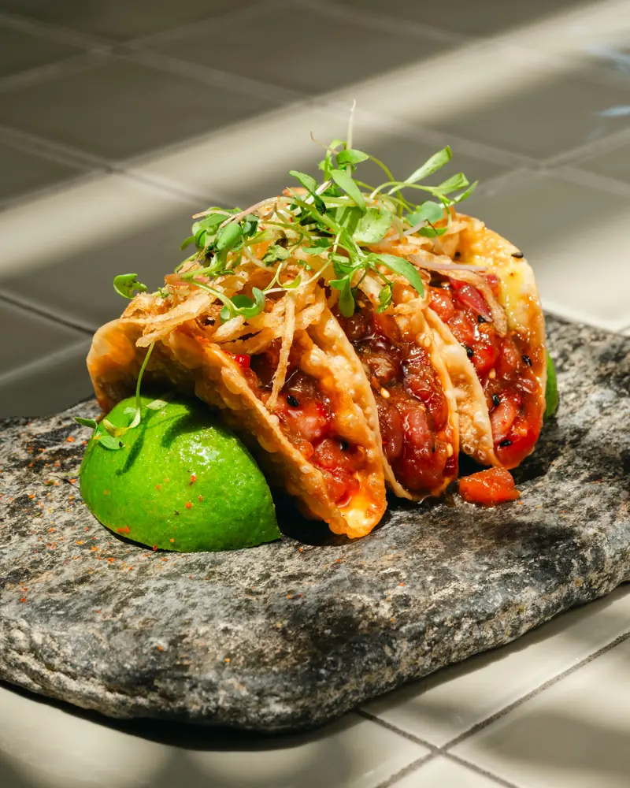
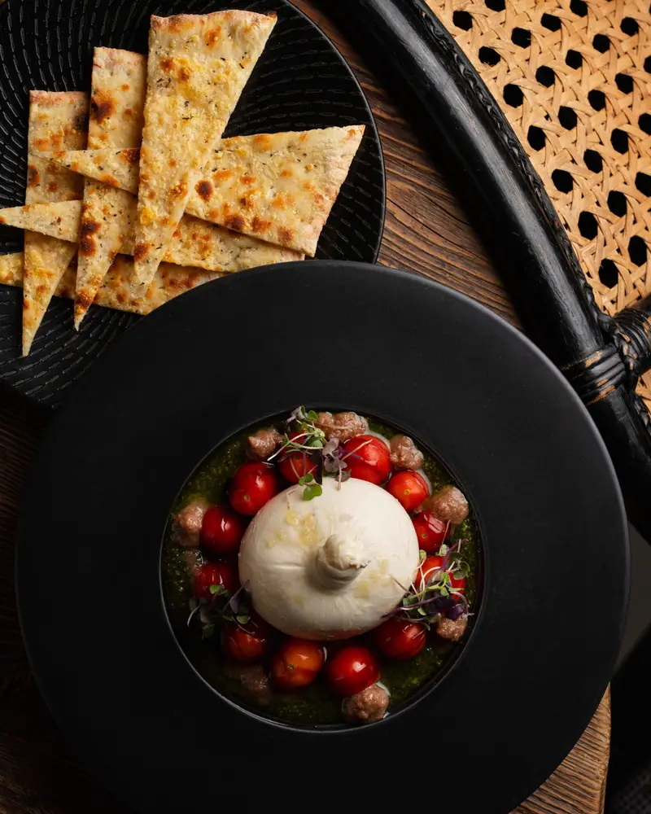
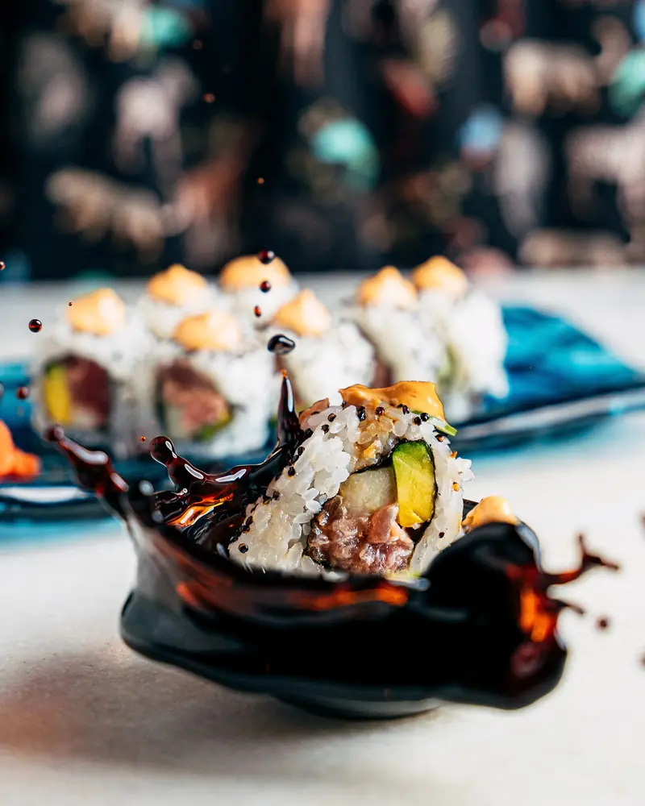
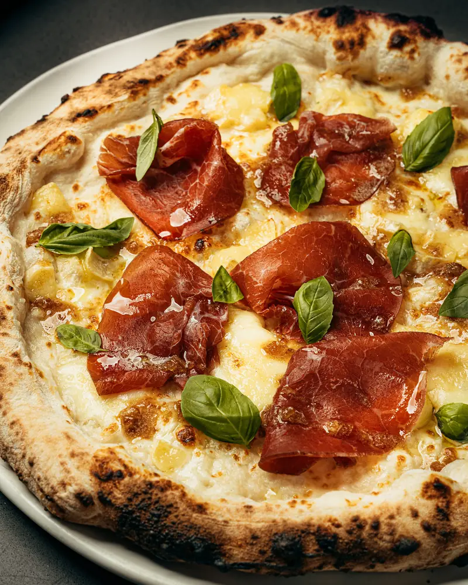
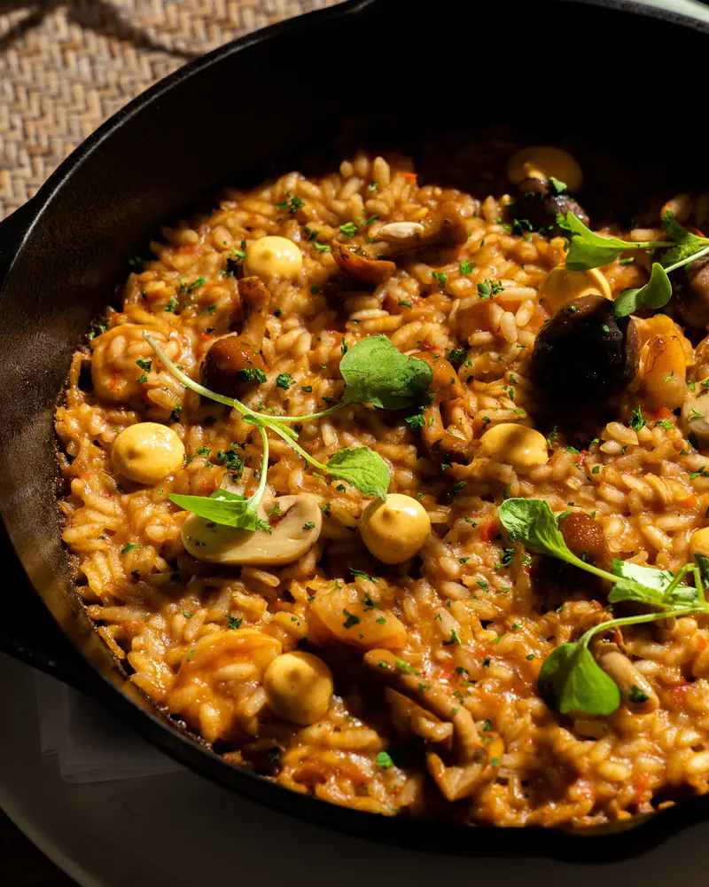
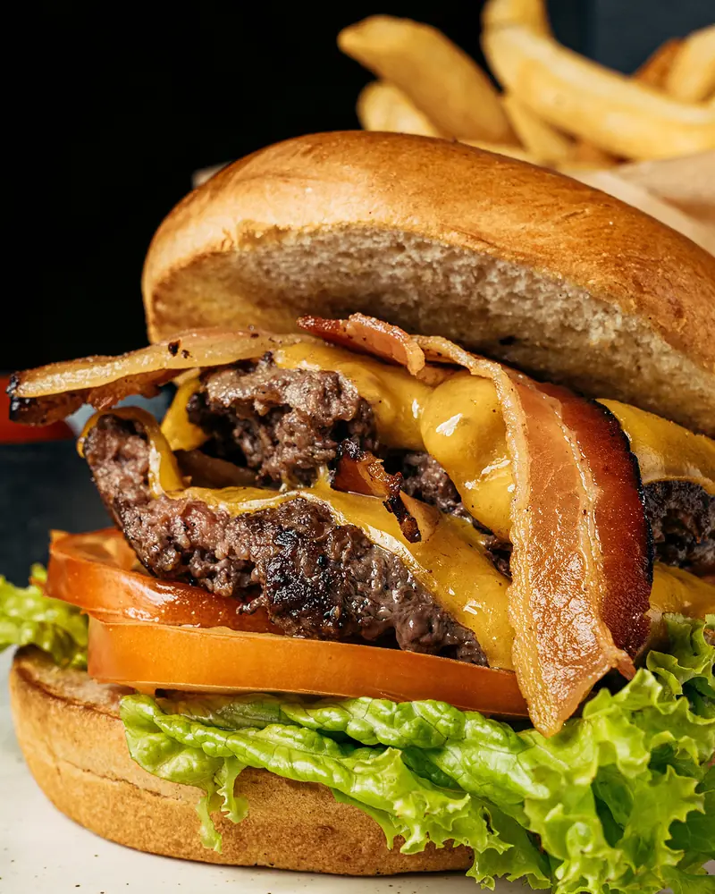
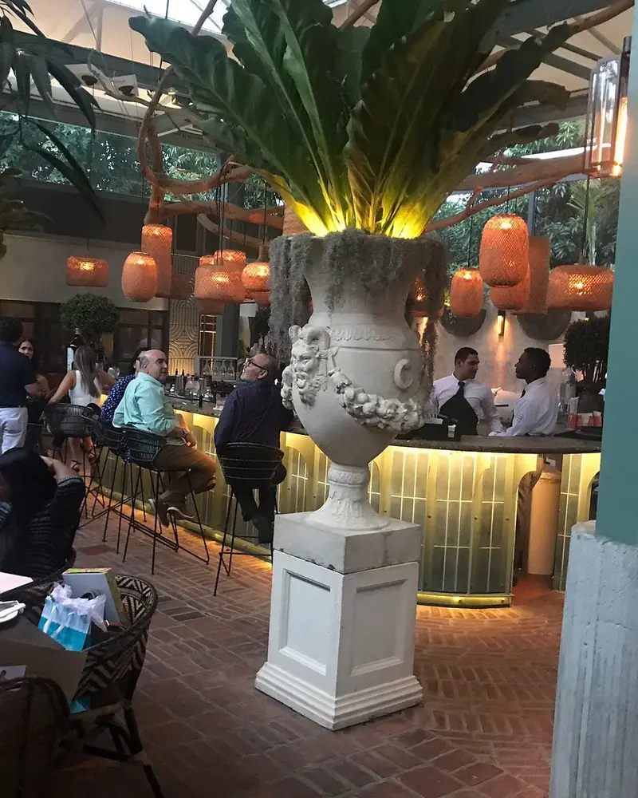
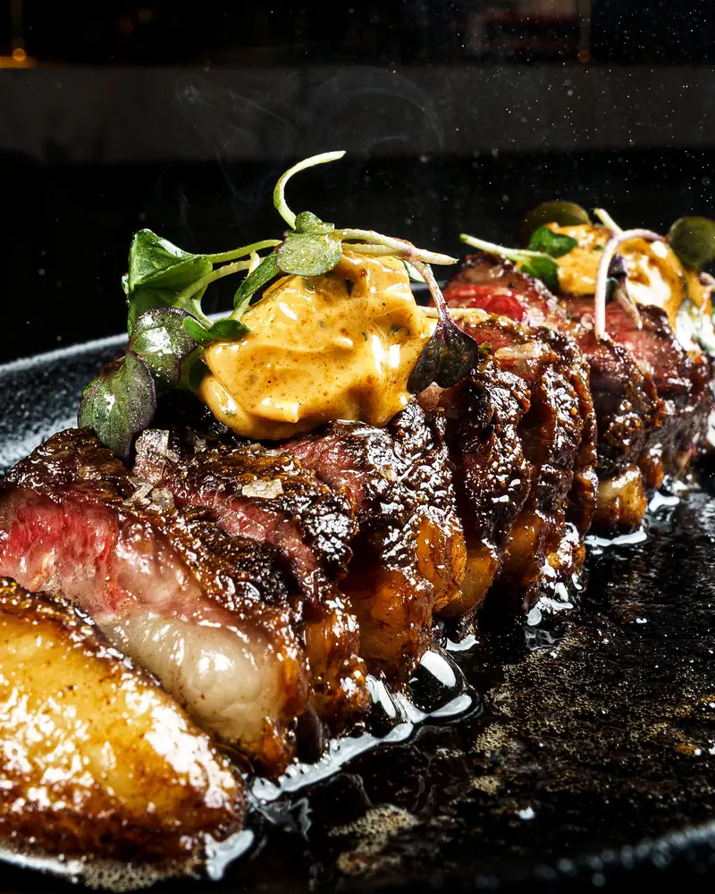

Ensanche Naco · Santo Domingo
Abierto todos los días desde las 12:00 p. m.
Del almuerzo a la última copa
Cocina de autor que viaja entre Perú, Japón, Italia y España, con la firma del chef Ricardo Abud.
Un día en Central
Ahora en Santo Domingo: —
12:00 p. m.Almuerzo
Cuatro cocinas, una sola mesa.
Central abrió en enero de 2018 con una idea sencilla: un pasaporte a las cocinas que más nos gustan. El ceviche peruano, el nigiri japonés, la pizza de Nápoles y el producto español comparten carta.
Ricardo AbudChef ejecutivo
- PerúCeviche & Tostonesguatapanal y acevichada de cilantro
- JapónNigiri & maki rollsdel salmón al tuna con foie gras
- ItaliaPecorino al Tartufoy pizzas desde Nápoles
- EspañaGambas Vesuviocon ajo rostizado y sal de Villena
Para compartir al centro
-

RD$575Tuna Tacos
Tartar de atún, spicy mayo, cebolla crujiente y guacamole.
-

RD$835Burrata Caprese
San Marzano baby, focaccia, tapenade de kalamata y sal ahumada.
-

desde RD$625Maki rolls
Spicy tuna, Salva Roll, Philadelphia 2.0 y salmón con foie.
-

desde RD$595Desde Nápoles
Pizzas de masa napolitana con San Marzano y fior di latte.
-

desde RD$755Risottos
De pato al oporto, de queso de cabra o funghi e mare.
-

RD$655Central Smashed Burger
Brioche, cheddar, bacon, cebolla y salsa de la casa.

4:00 p. m.Sobremesa
La terraza, sin prisa.
Bajo palmas, faroles y luz natural: el lugar para alargar el almuerzo, cerrar el día de oficina o empezar la noche con una sangría o un martini.
- Terraza amplia y salón climatizado
- Coctelería de autor, vinos y sangría
- Valet parking en la entrada
- Acceso para silla de ruedas
7:00 p. m.Cena
Del horno de leña a la mesa.
Cortes sellados al carbón y terminados en horno de leña, pescados con carácter y risottos que piden sobremesa.

Carnes de la casa
Picaña, short rib, filete y el Cowboy Steak de 32 oz para compartir.
desde RD$1,095
Skirt Mongolian
RD$1,795Churrasco al Vesuvio, arroz frito de wasabi y salsa mongolian. El plato que más se repite en las reseñas.
Cowboy Steak
RD$3,895Rib eye con hueso de 32 oz, mantequilla de porcini y ajo rostizado. Para compartir.
Filet à la Pomme
RD$1,995Tenderloin, muselina de papa, cebolla confitada y salsa angus.
Lubina Mezcal
RD$1,645Beurre blanc de mezcal, papas lionesa y ensalada de hierbas.
Asian Glazed Salmon
RD$1,195Arroz jazmín, teriyaki, puerro y ajonjolí.
10:00 p. m.Noche
La noche en Central
“No sé nada con certeza, pero ver las estrellas me hace soñar.”


Lo que dicen
Calificaciones y reseñas
- 84%recomienda en Facebook
- 8.8de 10 en Foursquare
- 108Ksiguen @centralsdq
Calificaciones públicas consultadas en octubre de 2026.
Lo que más se repite en las reseñas
- Skirt steak
- Ceviche con tostones
- Tuna tartar
- Salmón teriyaki
- Risotto
- Carpaccio
- Sangría y martinis
- Servicio de primera
- Ideal para celebrar
- Ambiente precioso
Visítanos
En el corazón de Naco
Av. Tiradentes No. 11,Ensanche Naco, Santo Domingo
Valet parking en la entrada.
El mapa se carga solo si lo pides, para que la página vaya más rápida.
Horario
Abierto todos los días
| Lunes | 12:00 p. m. – 12:00 a. m. |
|---|---|
| Martes | 12:00 p. m. – 12:00 a. m. |
| Miércoles | 12:00 p. m. – 12:00 a. m. |
| Jueves | 12:00 p. m. – 12:00 a. m. |
| Viernes | 12:00 p. m. – 1:00 a. m. |
| Sábado | 12:00 p. m. – 1:00 a. m. |
| Domingo | 12:00 p. m. – 12:00 a. m. |
Te recomendamos reservar para los fines de semana. Precios en RD$, impuestos no incluidos.
¿Te guardamos una mesa esta noche?
Elige día, hora y cuántos son. Te confirmamos por WhatsApp.